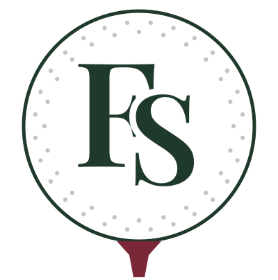

Brand guide · v1
The Fairway Society identity
One script wordmark, one monogram and one badge. Together they work everywhere, from a website header to a 2 cm embroidered chest logo.
What changed
Refining the original

Logo system
Four marks, one family


Monogram options
Choose your chest mark
Five directions for the small mark that goes on polos, caps and your profile picture. Each one is shown large, reversed on forest, and at embroidery sizes.



Colour
Palette
Fairway Forest#1F3A2B
Range Sage#8FA88A
Clubhouse Cream#F7F1E8
Society Blush#F2D4D7
Dusk Rose#C98A94
Claret#7A2837
Type
Typography
Script · Great VibesFor the love of the fairway
Headings · Playfair DisplayThe First Tee Collection
Body · MontserratGolf apparel for the self-taught, the public-course regular, and the one who's quietly getting better.
Do
- Use the monogram for anything smaller than 3 cm wide.
- Put the wordmark on cream, blush or forest. Use claret or forest ink on light backgrounds.
- Leave clear space around each mark at least the height of the “F”.
- Keep the script for the logo and short accents only.
Don't
- Put white script on light pink. The contrast is too low.
- Stretch, outline or add shadows to any mark.
- Retype the logo in a font. Always use the supplied files.
- Set body text or long headlines in the script.